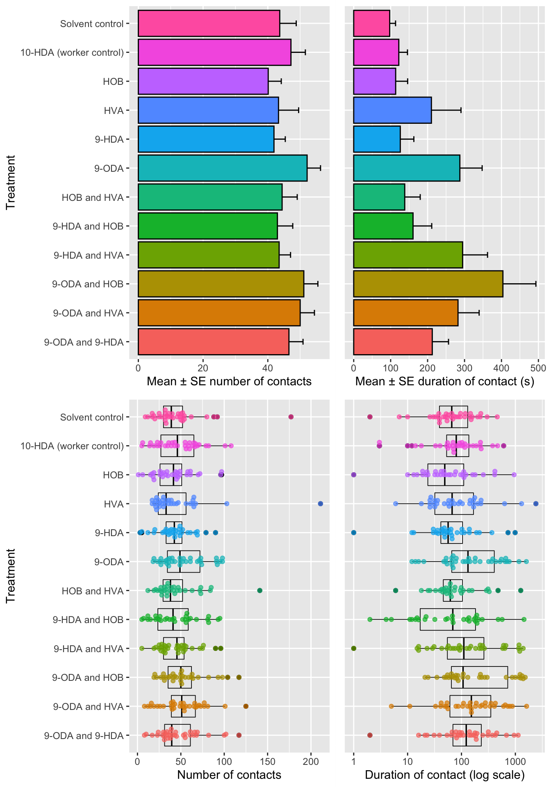
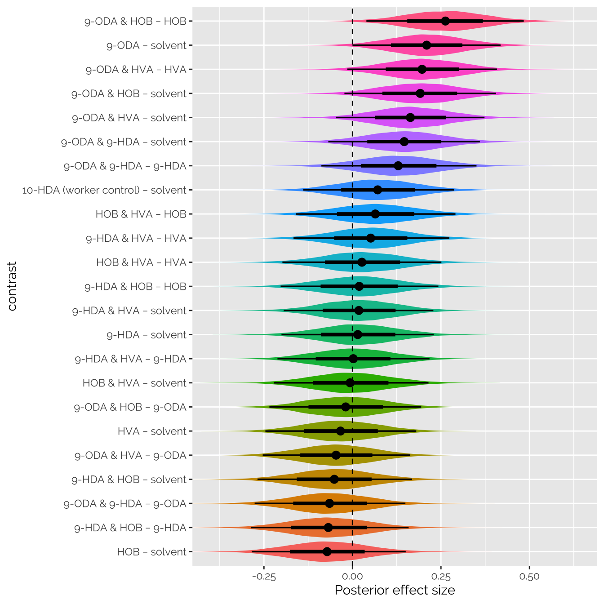
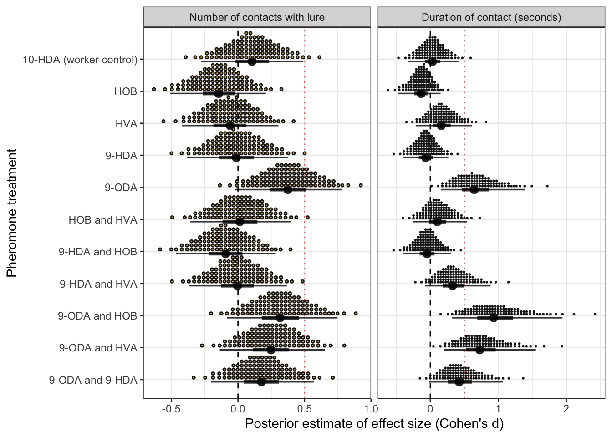
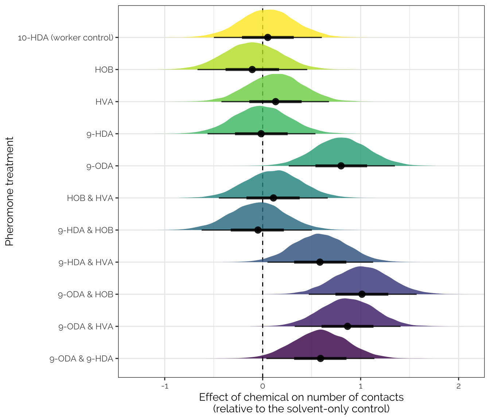
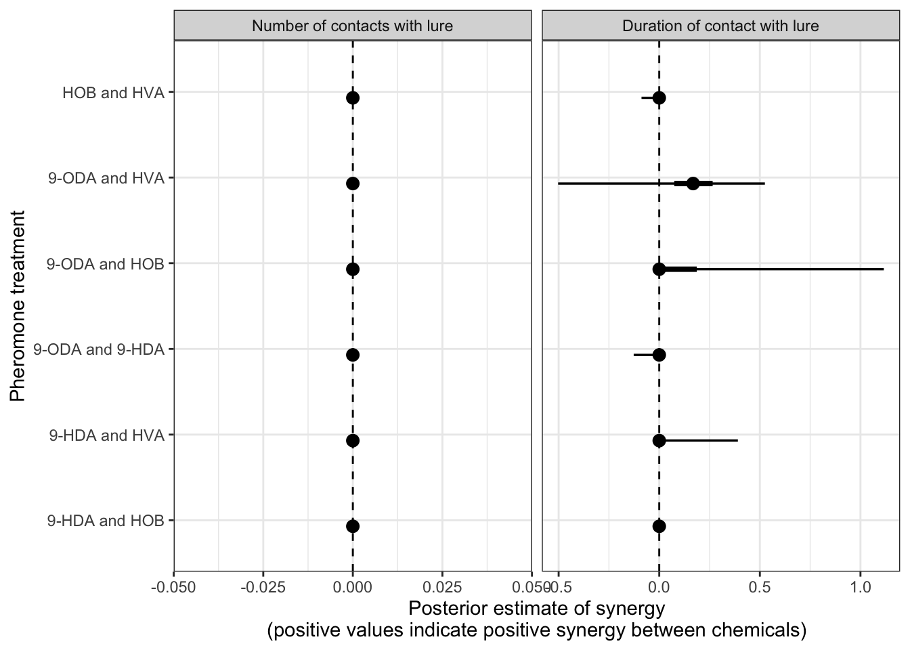

Apis queen pheromones and the retinue response
Last updated: 2020-03-13
Checks: 7 0
Knit directory: apis_retinue_expt/
This reproducible R Markdown analysis was created with workflowr (version 1.6.0). The Checks tab describes the reproducibility checks that were applied when the results were created. The Past versions tab lists the development history.
Great! Since the R Markdown file has been committed to the Git repository, you know the exact version of the code that produced these results.
Great job! The global environment was empty. Objects defined in the global environment can affect the analysis in your R Markdown file in unknown ways. For reproduciblity it’s best to always run the code in an empty environment.
The command set.seed(20190828) was run prior to running the code in the R Markdown file. Setting a seed ensures that any results that rely on randomness, e.g. subsampling or permutations, are reproducible.
Great job! Recording the operating system, R version, and package versions is critical for reproducibility.
Nice! There were no cached chunks for this analysis, so you can be confident that you successfully produced the results during this run.
Great job! Using relative paths to the files within your workflowr project makes it easier to run your code on other machines.
Great! You are using Git for version control. Tracking code development and connecting the code version to the results is critical for reproducibility. The version displayed above was the version of the Git repository at the time these results were generated.
Note that you need to be careful to ensure that all relevant files for the analysis have been committed to Git prior to generating the results (you can use wflow_publish or wflow_git_commit). workflowr only checks the R Markdown file, but you know if there are other scripts or data files that it depends on. Below is the status of the Git repository when the results were generated:
Ignored files:
Ignored: .DS_Store
Ignored: .Rhistory
Ignored: .Rproj.user/
Ignored: Figures and tables.docx
Ignored: data/.DS_Store
Ignored: data/behaviour_data_OLDER_VERSION.csv
Ignored: data/raw_blinded_behaviour_data_OLD_VERSION.csv
Ignored: output/hive_as_fixed_effect_model.rds
Ignored: output/model_comparison_table_count_brms.rds
Ignored: output/model_comparison_table_duration_brms.rds
Ignored: output/model_selection_table.rds
Ignored: output/model_selection_table_count_glmmTMB.rds
Ignored: output/model_selection_table_duration_glmmTMB.rds
Ignored: output/model_weights_random_slope.rds
Ignored: output/multivariate_brms.rds
Ignored: output/pre_reg_model.rds
Ignored: output/top_10_model_formulae_count.rds
Ignored: output/top_10_model_formulae_duration.rds
Ignored: pheromone paper draft.docx
Ignored: ~$gures and tables.docx
Untracked files:
Untracked: analysis/preregistered_analysis.Rmd
Untracked: data/data_for_each_group_bees.csv
Untracked: data/metadata_for_each_dish_and_tray.csv
Unstaged changes:
Modified: .gitignore
Modified: analysis/clean_raw_data.Rmd
Modified: analysis/index.Rmd
Modified: data/raw_blinded_behaviour_data.csv
Modified: data/unblinded_behaviour_data.csv
Note that any generated files, e.g. HTML, png, CSS, etc., are not included in this status report because it is ok for generated content to have uncommitted changes.
These are the previous versions of the R Markdown and HTML files. If you’ve configured a remote Git repository (see ?wflow_git_remote), click on the hyperlinks in the table below to view them.
| File | Version | Author | Date | Message |
|---|---|---|---|---|
| Rmd | 825851b | lukeholman | 2020-03-13 | big commit |
| Rmd | b536404 | lukeholman | 2020-02-05 | First commit |
Load the data
Re-code the treatment variables to facilitate modelling
First, we prepare the un-blinded dataset for statistical modelling by adding five new binary variables whose names start with “has”. These 5 variable contain 0s and 1s, which describe whether the focal observation contains the focal chemical. For example, the variable “has_9ODA” contains a 1 for rows where the filter paper was treated with 9-ODA (either on its own, or as part of a 2 -chemical mixture), and a 0 otherwise.
library(tidyverse)
library(ggbeeswarm)
library(tidybayes)
library(brms)
library(gridExtra)
library(glmmTMB)
library(lme4)
library(MuMIn)
library(kableExtra)
library(glue)
library(future)
library(future.apply)
library(bayestestR)
library(knitrhooks) # install with devtools::install_github("nathaneastwood/knitrhooks")
options(stringsAsFactors = FALSE)
output_max_height() # a knitrhook option
# Here are the treatments, ranked roughly from least to most like a queen bee
treatment_levels <-
# two "controls"
c("Solvent control", "10-HDA (worker control)",
# 4 individual queen-type chemicals
"HOB", "HVA", "9-HDA", "9-ODA",
# 6 pairwise combinations of two of the queen-type chemicals
"HOB and HVA",
"9-HDA and HOB", "9-HDA and HVA",
"9-ODA and HOB", "9-ODA and HVA", "9-ODA and 9-HDA")
behaviour_data <- read_csv("data/unblinded_behaviour_data.csv") %>%
mutate(has_10HDA = as.factor(as.numeric(str_detect(treatment, "10-HDA"))),
has_HVA = as.factor(as.numeric(str_detect(treatment, "HVA"))),
has_HOB = as.factor(as.numeric(str_detect(treatment, "HOB"))),
has_9HDA = as.factor(as.numeric(str_detect(treatment, "9-HDA"))),
has_9ODA = as.factor(as.numeric(str_detect(treatment, "9-ODA")))) %>%
mutate(treatment = factor(treatment, levels = treatment_levels)) %>%
mutate(dish = paste(tray, dish, sep = "_")) %>%
as_tibble() %>%
select(hive, treatment, tray, dish, number_bees, starts_with("has"),
start_touch, end_touch, touch_duration, notes)Inspect 20 randomly-selected rows of the 18,027-row data frame behaviour_data:
behaviour_data %>%
sample_n(20) %>%
kable() %>% kable_styling() %>%
scroll_box(width = "700px", height = "300px")| hive | treatment | tray | dish | number_bees | has_10HDA | has_HVA | has_HOB | has_9HDA | has_9ODA | start_touch | end_touch | touch_duration | notes |
|---|---|---|---|---|---|---|---|---|---|---|---|---|---|
| Garden | HOB | 34 | 34_6 | 5 | 0 | 0 | 1 | 0 | 0 | 158 | 158 | 0 | NA |
| Garden | HVA | 35 | 35_11 | 5 | 0 | 1 | 0 | 0 | 0 | 308 | 308 | 0 | NA |
| Garden | HVA | 34 | 34_5 | 5 | 0 | 1 | 0 | 0 | 0 | 1170 | 1180 | 10 | Bee gets a little tangled in paper |
| Zoology | 9-HDA and HVA | 7 | 7_10 | 5 | 0 | 1 | 0 | 1 | 0 | 424 | 426 | 2 | NA |
| Skylab | 9-HDA | 15 | 15_5 | 5 | 0 | 0 | 0 | 1 | 0 | 1429 | 1429 | 0 | NA |
| Zoology | 10-HDA (worker control) | 5 | 5_6 | 5 | 1 | 0 | 0 | 0 | 0 | 1658 | 1658 | 0 | NA |
| Zoology | 9-HDA and HVA | 6 | 6_8 | 5 | 0 | 1 | 0 | 1 | 0 | 1116 | 1119 | 3 | NA |
| Zoology | HOB and HVA | 7 | 7_9 | 5 | 0 | 1 | 1 | 0 | 0 | 1424 | 1430 | 6 | NA |
| Zoology | HOB and HVA | 6 | 6_9 | 5 | 0 | 1 | 1 | 0 | 0 | 104 | 104 | 0 | NA |
| Garden | 9-ODA and HVA | 24 | 24_7 | 5 | 0 | 1 | 0 | 0 | 1 | 897 | 897 | 0 | NA |
| Skylab | 9-HDA | 12 | 12_10 | 5 | 0 | 0 | 0 | 1 | 0 | 635 | 642 | 7 | NA |
| Zoology | Solvent control | 5 | 5_2 | 5 | 0 | 0 | 0 | 0 | 0 | 44 | 45 | 1 | NA |
| Garden | 9-ODA and 9-HDA | 31 | 31_1 | 5 | 0 | 0 | 0 | 1 | 1 | 942 | 942 | 0 | NA |
| Skylab | Solvent control | 1 | 1_12 | 5 | 0 | 0 | 0 | 0 | 0 | 1552 | 1552 | 0 | NA |
| Garden | Solvent control | 24 | 24_11 | 5 | 0 | 0 | 0 | 0 | 0 | 693 | 695 | 2 | NA |
| Zoology | Solvent control | 4 | 4_9 | 5 | 0 | 0 | 0 | 0 | 0 | 882 | 885 | 3 | NA |
| Zoology | 9-HDA and HVA | 23 | 23_5 | 5 | 0 | 1 | 0 | 1 | 0 | 813 | 813 | 0 | NA |
| Garden | HOB and HVA | 35 | 35_6 | 5 | 0 | 1 | 1 | 0 | 0 | 466 | 467 | 1 | double sniff |
| Skylab | 9-ODA and 9-HDA | 13 | 13_1 | 5 | 0 | 0 | 0 | 1 | 1 | 193 | 194 | 1 | NA |
| Skylab | 9-HDA and HOB | 3 | 3_8 | 5 | 0 | 0 | 1 | 1 | 0 | 493 | 494 | 1 | NA |
Summarise the data from each Petri dish
The raw file (data/unblinded_behaviour_data.csv) contains one row for each observation of a bee making contact with the filter paper. Here, we create a summarised version of this dataset called summary_data, in which each row describes the results for the complete 30-minute observation of one Petri dish. We record the number of times a bee touched the pheromone lure (n_touches) and the total number of seconds that bees were in contact with the lure (touch_duration; measured in “bee-seconds”, i.e. two bees touching the lure for 5 seconds and 2 seconds each, whether simultaneously or different times, would give a score of 7 seconds for this variable).
summary_data <- behaviour_data %>%
group_by(treatment, hive, tray, dish, number_bees,
has_10HDA, has_HVA, has_HOB,
has_9HDA, has_9ODA) %>%
summarise(n_touches = length(touch_duration),
touch_duration = sum(touch_duration)) %>%
ungroup()
# There was one tray where no contacts were observed at all with the paper
# It was Tray 35, Dish 12, which the blind codes tell us is treatment=HOB, hive=Garden
# Here, we add this to the dataset manually:
# Add one more row to the end of the dataframe, by copy-pasting an existing row
summary_data <- summary_data %>%
bind_rows(summary_data[1, ])
# Overwrite the values (this was carefully checked!)
summary_data[nrow(summary_data), ] <- c("HOB", "Garden", 35, "35_12", 5, 0, 0, 1, 0, 0, 0, 0)
summary_data <- summary_data %>%
mutate(number_bees = as.numeric(number_bees),
tray = as.numeric(tray),
n_touches = as.numeric(n_touches),
touch_duration = as.numeric(touch_duration)) %>%
arrange(treatment, tray, hive)
# Save this analysis-ready data for data archiving
write_csv(summary_data, "data/data_for_each_group_bees.csv")Inspect 20 random rows of the 395-row data frame summary_data:
summary_data %>% sample_n(20) %>%
kable() %>% kable_styling() %>%
scroll_box(width = "700px", height = "300px")| treatment | hive | tray | dish | number_bees | has_10HDA | has_HVA | has_HOB | has_9HDA | has_9ODA | n_touches | touch_duration |
|---|---|---|---|---|---|---|---|---|---|---|---|
| 9-ODA and HVA | Garden | 34 | 34_3 | 5 | 0 | 1 | 0 | 0 | 1 | 14 | 181 |
| HVA | Zoology | 19 | 19_2 | 5 | 0 | 1 | 0 | 0 | 0 | 32 | 47 |
| Solvent control | Zoology | 9 | 9_9 | 5 | 0 | 0 | 0 | 0 | 0 | 53 | 29 |
| 9-ODA and HVA | Zoology | 9 | 9_2 | 5 | 0 | 1 | 0 | 0 | 1 | 100 | 129 |
| HVA | Skylab | 3 | 3_9 | 5 | 0 | 1 | 0 | 0 | 0 | 28 | 55 |
| HOB | Garden | 20 | 20_4 | 5 | 0 | 0 | 1 | 0 | 0 | 18 | 18 |
| HVA | Garden | 34 | 34_5 | 5 | 0 | 1 | 0 | 0 | 0 | 20 | 31 |
| 10-HDA (worker control) | Skylab | 10 | 10_11 | 5 | 1 | 0 | 0 | 0 | 0 | 68 | 187 |
| HVA | Skylab | 12 | 12_4 | 5 | 0 | 1 | 0 | 0 | 0 | 21 | 167 |
| 9-HDA | Zoology | 7 | 7_4 | 5 | 0 | 0 | 0 | 1 | 0 | 41 | 29 |
| 9-ODA | Zoology | 5 | 5_8 | 5 | 0 | 0 | 0 | 0 | 1 | 94 | 380 |
| 9-ODA and 9-HDA | Zoology | 6 | 6_12 | 5 | 0 | 0 | 0 | 1 | 1 | 64 | 683 |
| 9-ODA | Skylab | 1 | 1_2 | 5 | 0 | 0 | 0 | 0 | 1 | 97 | 550 |
| 9-ODA and HVA | Skylab | 10 | 10_7 | 5 | 0 | 1 | 0 | 0 | 1 | 53 | 223 |
| HOB and HVA | Skylab | 13 | 13_2 | 5 | 0 | 1 | 1 | 0 | 0 | 30 | 107 |
| 9-HDA | Skylab | 3 | 3_2 | 5 | 0 | 0 | 0 | 1 | 0 | 48 | 730 |
| Solvent control | Garden | 28 | 28_2 | 4 | 0 | 0 | 0 | 0 | 0 | 11 | 9 |
| 9-HDA and HVA | Garden | 29 | 29_9 | 5 | 0 | 1 | 0 | 1 | 0 | 52 | 62 |
| Solvent control | Zoology | 7 | 7_7 | 5 | 0 | 0 | 0 | 0 | 0 | 39 | 114 |
| HOB | Garden | 35 | 35_12 | 5 | 0 | 0 | 1 | 0 | 0 | 0 | 0 |
Table of sample sizes
Across all hives
touch_counts <- behaviour_data %>%
group_by(treatment) %>%
summarise(`Total # touches recorded` = n())
summary_data %>%
group_by(treatment) %>%
summarise(`Number of Petri dishes assayed` = n(),
`Mean # bees per dish` = round(mean(number_bees), 2),
`Total # bees assayed` = sum(number_bees)) %>%
arrange(treatment) %>%
left_join(touch_counts, by = "treatment") %>%
kable() %>% kable_styling(full_width = FALSE)| treatment | Number of Petri dishes assayed | Mean # bees per dish | Total # bees assayed | Total # touches recorded |
|---|---|---|---|---|
| Solvent control | 35 | 4.91 | 172 | 1529 |
| 10-HDA (worker control) | 33 | 4.91 | 162 | 1556 |
| HOB | 32 | 4.91 | 157 | 1284 |
| HVA | 33 | 4.91 | 162 | 1429 |
| 9-HDA | 32 | 4.91 | 157 | 1341 |
| 9-ODA | 35 | 4.91 | 172 | 1825 |
| HOB and HVA | 31 | 4.90 | 152 | 1377 |
| 9-HDA and HOB | 30 | 4.90 | 147 | 1289 |
| 9-HDA and HVA | 34 | 4.91 | 167 | 1479 |
| 9-ODA and HOB | 32 | 4.94 | 158 | 1636 |
| 9-ODA and HVA | 34 | 4.91 | 167 | 1700 |
| 9-ODA and 9-HDA | 34 | 4.88 | 166 | 1582 |
For each individual hive
touch_counts <- behaviour_data %>%
group_by(treatment, hive) %>%
summarise(`Total # touches recorded` = n())
summary_data %>%
group_by(treatment, hive) %>%
summarise(`Number of Petri dishes assayed` = n(),
`Mean # bees per dish` = round(mean(number_bees), 2),
`Total # bees assayed` = sum(number_bees)) %>%
arrange(treatment, hive) %>%
left_join(touch_counts, by = c("treatment", "hive")) %>%
kable() %>% kable_styling(full_width = FALSE)| treatment | hive | Number of Petri dishes assayed | Mean # bees per dish | Total # bees assayed | Total # touches recorded |
|---|---|---|---|---|---|
| Solvent control | Garden | 13 | 4.85 | 63 | 386 |
| Solvent control | Skylab | 9 | 4.89 | 44 | 505 |
| Solvent control | Zoology | 13 | 5.00 | 65 | 638 |
| 10-HDA (worker control) | Garden | 13 | 4.85 | 63 | 406 |
| 10-HDA (worker control) | Skylab | 9 | 4.89 | 44 | 478 |
| 10-HDA (worker control) | Zoology | 11 | 5.00 | 55 | 672 |
| HOB | Garden | 12 | 4.83 | 58 | 368 |
| HOB | Skylab | 9 | 4.89 | 44 | 352 |
| HOB | Zoology | 11 | 5.00 | 55 | 564 |
| HVA | Garden | 13 | 4.85 | 63 | 383 |
| HVA | Skylab | 9 | 4.89 | 44 | 457 |
| HVA | Zoology | 11 | 5.00 | 55 | 589 |
| 9-HDA | Garden | 11 | 4.82 | 53 | 349 |
| 9-HDA | Skylab | 9 | 4.89 | 44 | 451 |
| 9-HDA | Zoology | 12 | 5.00 | 60 | 541 |
| 9-ODA | Garden | 13 | 4.85 | 63 | 557 |
| 9-ODA | Skylab | 9 | 4.89 | 44 | 461 |
| 9-ODA | Zoology | 13 | 5.00 | 65 | 807 |
| HOB and HVA | Garden | 12 | 4.83 | 58 | 367 |
| HOB and HVA | Skylab | 7 | 4.86 | 34 | 299 |
| HOB and HVA | Zoology | 12 | 5.00 | 60 | 711 |
| 9-HDA and HOB | Garden | 11 | 4.82 | 53 | 319 |
| 9-HDA and HOB | Skylab | 8 | 4.88 | 39 | 398 |
| 9-HDA and HOB | Zoology | 11 | 5.00 | 55 | 572 |
| 9-HDA and HVA | Garden | 12 | 4.83 | 58 | 375 |
| 9-HDA and HVA | Skylab | 9 | 4.89 | 44 | 344 |
| 9-HDA and HVA | Zoology | 13 | 5.00 | 65 | 760 |
| 9-ODA and HOB | Garden | 12 | 4.92 | 59 | 435 |
| 9-ODA and HOB | Skylab | 8 | 4.88 | 39 | 406 |
| 9-ODA and HOB | Zoology | 12 | 5.00 | 60 | 795 |
| 9-ODA and HVA | Garden | 13 | 4.85 | 63 | 438 |
| 9-ODA and HVA | Skylab | 9 | 4.89 | 44 | 567 |
| 9-ODA and HVA | Zoology | 12 | 5.00 | 60 | 695 |
| 9-ODA and 9-HDA | Garden | 13 | 4.85 | 63 | 449 |
| 9-ODA and 9-HDA | Skylab | 9 | 4.78 | 43 | 450 |
| 9-ODA and 9-HDA | Zoology | 12 | 5.00 | 60 | 683 |
Plots showing the raw data
These plots show the means +/- SE (top) or the individual data points for each group of bees (bottom). The left plots show the number of times bees made contact with the pheromone lure, while the right show the total duration the bees were in contact with the lure. The latter response variable is measured in seconds, and has been transformed by adding 1 second and plotting it on a Log10 scale.
p1 <- summary_data %>%
group_by(treatment) %>%
summarise(mean = mean(n_touches),
SE = sd(n_touches) / sqrt(n())) %>%
mutate(treatment = factor(treatment, rev(treatment))) %>%
ggplot(aes(treatment, mean, fill = treatment)) +
geom_errorbar(aes(ymin = mean-SE, ymax=mean+SE), width = 0.2) +
geom_bar(stat="identity", colour = "black") + coord_flip() +
xlab("Treatment") +
ylab("Mean \u00B1 SE number of contacts") +
theme(legend.position = "none")
p2 <- summary_data %>%
group_by(treatment) %>%
summarise(mean = mean(touch_duration),
SE = sd(touch_duration) / sqrt(n())) %>%
mutate(treatment = factor(treatment, rev(treatment))) %>%
ggplot(aes(treatment, mean, fill = treatment)) +
geom_errorbar(aes(ymin = mean-SE, ymax=mean+SE), width = 0.2) +
geom_bar(stat="identity", colour = "black") + coord_flip() +
xlab(NULL) +
ylab("Mean \u00B1 SE duration of contact (s)") +
theme(legend.position = "none",
axis.text.y = element_blank(),
axis.ticks.y = element_blank())
p3 <- summary_data %>%
mutate(treatment = factor(treatment, rev(levels(treatment)))) %>%
ggplot(aes(treatment, n_touches + 1, colour = treatment)) +
geom_boxplot(fill = NA, colour = "black", size = 0.3) +
geom_beeswarm(alpha = .7) +
coord_flip() +
ylab("Number of contacts") +
xlab("Treatment") +
theme(legend.position = "none")
p4 <- summary_data %>%
mutate(treatment = factor(treatment, rev(levels(treatment)))) %>%
ggplot(aes(treatment, touch_duration + 1, colour = treatment)) +
geom_boxplot(fill = NA, colour = "black", size = 0.3) +
geom_beeswarm(alpha = .7) +
coord_flip() +
scale_y_log10() +
ylab("Duration of contact (log scale)") +
xlab(NULL) +
theme(legend.position = "none",
axis.text.y = element_blank(),
axis.ticks.y = element_blank())
plot(rbind(cbind(ggplotGrob(p1), ggplotGrob(p2), size = "last"),
cbind(ggplotGrob(p3), ggplotGrob(p4), size = "last")))
Code to run all models
Running the multivariate “full model”
This is the full bivariate GLMM described first in the paper (right after the pre-registered analysis is described).
Fit the model
if(!file.exists("output/multivariate_brms.rds")){
multivariate_brms <- brm(
mvbind(n_touches, touch_duration) ~ has_10HDA + (has_HVA + has_HOB + has_9HDA + has_9ODA)^2 +
hive + scale(number_bees) + (1 | make_corr | tray),
data = summary_data %>% mutate(touch_duration = touch_duration + 0.01),
iter = 10000, chains = 4, cores = 1,
prior = c(prior(normal(0, 3), class = "b", resp = "ntouches"),
prior(normal(0, 3), class = "b", resp = "touchduration")),
family = list("negbinomial", "lognormal"),
control = list(max_treedepth = 20, adapt_delta = 0.99))
saveRDS(multivariate_brms, "output/multivariate_brms.rds")
} else{
multivariate_brms <- readRDS("output/multivariate_brms.rds")
}Graphical verification of the model’s fit
Here we perform “posterior predictive checks” on the full model, for both response variables. The thick line shows the distribution of the real data, and the 10 thin blue lines show the distribution of fitted values for 10 random draws from the posterior. The fitted values recapitulate the orignal data well, which is a necessary condition for the model to produce useful inferences. This suggests that the models employed here were an adequate approximation of the true data-generating processes.
grid.arrange(
pp_check(multivariate_brms, resp = "ntouches") + labs(title = "Number of contacts with the lure") + theme(legend.position = "none"),
pp_check(multivariate_brms, resp = "touchduration") + labs(title = "Duration of contact with the lure") + theme(legend.position = "none"),
pp_check(multivariate_brms, resp = "touchduration") + labs(title = "Duration of contact with the lure (log10 scale)") + theme(legend.position = "none") + scale_x_log10()
)
Raw output from brms describing the full model
multivariate_brms Family: MV(negbinomial, lognormal)
Links: mu = log; shape = identity
mu = identity; sigma = identity
Formula: n_touches ~ has_10HDA + (has_HVA + has_HOB + has_9HDA + has_9ODA)^2 + hive + scale(number_bees) + (1 | make_corr | tray)
touch_duration ~ has_10HDA + (has_HVA + has_HOB + has_9HDA + has_9ODA)^2 + hive + scale(number_bees) + (1 | make_corr | tray)
Data: summary_data %>% mutate(touch_duration = touch_dur (Number of observations: 395)
Samples: 4 chains, each with iter = 10000; warmup = 5000; thin = 1;
total post-warmup samples = 20000
Group-Level Effects:
~tray (Number of levels: 35)
Estimate Est.Error l-95% CI
sd(ntouches_Intercept) 0.28 0.05 0.20
sd(touchduration_Intercept) 0.63 0.12 0.43
cor(ntouches_Intercept,touchduration_Intercept) 0.77 0.14 0.44
u-95% CI Rhat Bulk_ESS Tail_ESS
sd(ntouches_Intercept) 0.38 1.00 7531 11878
sd(touchduration_Intercept) 0.88 1.00 8992 13336
cor(ntouches_Intercept,touchduration_Intercept) 0.98 1.00 6112 6888
Population-Level Effects:
Estimate Est.Error l-95% CI u-95% CI Rhat
ntouches_Intercept 3.42 0.12 3.19 3.65 1.00
touchduration_Intercept 3.65 0.30 3.07 4.25 1.00
ntouches_has_10HDA1 0.06 0.11 -0.16 0.28 1.00
ntouches_has_HVA1 -0.04 0.11 -0.26 0.18 1.00
ntouches_has_HOB1 -0.09 0.11 -0.31 0.13 1.00
ntouches_has_9HDA1 -0.01 0.11 -0.23 0.22 1.00
ntouches_has_9ODA1 0.20 0.11 -0.01 0.41 1.00
ntouches_hiveSkylab 0.42 0.14 0.15 0.68 1.00
ntouches_hiveZoology 0.52 0.13 0.26 0.76 1.00
ntouches_scalenumber_bees 0.03 0.05 -0.07 0.13 1.00
ntouches_has_HVA1:has_HOB1 0.14 0.16 -0.18 0.46 1.00
ntouches_has_HVA1:has_9HDA1 0.04 0.16 -0.27 0.35 1.00
ntouches_has_HVA1:has_9ODA1 -0.03 0.16 -0.33 0.28 1.00
ntouches_has_HOB1:has_9HDA1 0.04 0.16 -0.28 0.36 1.00
ntouches_has_HOB1:has_9ODA1 0.06 0.16 -0.25 0.37 1.00
ntouches_has_9HDA1:has_9ODA1 -0.10 0.16 -0.41 0.21 1.00
touchduration_has_10HDA1 0.06 0.32 -0.57 0.69 1.00
touchduration_has_HVA1 0.27 0.32 -0.36 0.89 1.00
touchduration_has_HOB1 -0.31 0.32 -0.94 0.32 1.00
touchduration_has_9HDA1 -0.14 0.32 -0.76 0.50 1.00
touchduration_has_9ODA1 0.81 0.31 0.21 1.41 1.00
touchduration_hiveSkylab 0.78 0.32 0.14 1.42 1.00
touchduration_hiveZoology 0.70 0.30 0.11 1.30 1.00
touchduration_scalenumber_bees 0.07 0.13 -0.17 0.32 1.00
touchduration_has_HVA1:has_HOB1 0.22 0.45 -0.66 1.10 1.00
touchduration_has_HVA1:has_9HDA1 0.36 0.45 -0.52 1.24 1.00
touchduration_has_HVA1:has_9ODA1 -0.21 0.44 -1.08 0.66 1.00
touchduration_has_HOB1:has_9HDA1 0.34 0.46 -0.56 1.23 1.00
touchduration_has_HOB1:has_9ODA1 0.52 0.45 -0.36 1.40 1.00
touchduration_has_9HDA1:has_9ODA1 -0.07 0.44 -0.94 0.78 1.00
Bulk_ESS Tail_ESS
ntouches_Intercept 5964 9935
touchduration_Intercept 6748 10501
ntouches_has_10HDA1 10708 12716
ntouches_has_HVA1 7738 11756
ntouches_has_HOB1 7822 11748
ntouches_has_9HDA1 7315 10768
ntouches_has_9ODA1 7513 12306
ntouches_hiveSkylab 6023 10309
ntouches_hiveZoology 5956 10289
ntouches_scalenumber_bees 8175 11691
ntouches_has_HVA1:has_HOB1 8735 12773
ntouches_has_HVA1:has_9HDA1 7969 12523
ntouches_has_HVA1:has_9ODA1 8376 12593
ntouches_has_HOB1:has_9HDA1 8262 13215
ntouches_has_HOB1:has_9ODA1 8901 13218
ntouches_has_9HDA1:has_9ODA1 8222 12595
touchduration_has_10HDA1 10837 13137
touchduration_has_HVA1 7467 10905
touchduration_has_HOB1 7686 11705
touchduration_has_9HDA1 7837 12247
touchduration_has_9ODA1 7381 11453
touchduration_hiveSkylab 7494 12022
touchduration_hiveZoology 6914 10979
touchduration_scalenumber_bees 10228 13675
touchduration_has_HVA1:has_HOB1 8514 11245
touchduration_has_HVA1:has_9HDA1 8536 11314
touchduration_has_HVA1:has_9ODA1 8357 11209
touchduration_has_HOB1:has_9HDA1 9134 13098
touchduration_has_HOB1:has_9ODA1 8686 11990
touchduration_has_9HDA1:has_9ODA1 8381 13113
Family Specific Parameters:
Estimate Est.Error l-95% CI u-95% CI Rhat Bulk_ESS Tail_ESS
shape_ntouches 5.50 0.48 4.62 6.48 1.00 22427 13857
sigma_touchduration 1.33 0.05 1.23 1.43 1.00 23858 14842
Samples were drawn using sampling(NUTS). For each parameter, Bulk_ESS
and Tail_ESS are effective sample size measures, and Rhat is the potential
scale reduction factor on split chains (at convergence, Rhat = 1).
Preliminary model comparison ranking using frequentist GLMMs
Initial trials revealed that it is computationally challenging to run and compare very many brms models. To address this, we ran a preliminary model comparison step in the glmmTMB package, which fits frequentist generalised linear mixed models (GLMM), and used glmmTMB to select the 10 best-fitting models, which were then re-ranked using brms (see next section).
Using the glmmTMB package, we first fit a full model with the following formula:
y ~ has_10HDA + (has_HVA + has_HOB + has_9HDA + has_9ODA)^2 + hive + (1 | tray)
where y is the response variable, i.e. either the number of times a bee touched the pheromone-treated paper, or the total duration over which bees were in contact with the paper (measured in “bee-seconds”, such that 2 bees touching the paper for 10 seconds each would be recorded as 20).
That is, we fit 6 main effect fixed factors and 1 random intercept (tray). “Hive” was fit as a fixed factor not a random factor because it only has 3 levels, and it is generally not advised to use random factors with fewer than about 6 levels (this is one difference from the pre-registration; we initially planned to include more hives, but not all of our hives contained enough workers for use in the experiments). We fit all possible 2-way interactions among the pheromone components that were presented as part of a 2-component mixture. There were 452 possible sub-models in this full model, all of which were run and compared using glmmTMB.
full_model <- "n_touches ~ has_10HDA + (has_HVA + has_HOB + has_9HDA + has_9ODA)^2 + hive + number_bees + (1 | tray)"
if(!file.exists("output/model_selection_table_duration_glmmTMB.rds")){
options(na.action="na.fail") # needed for dredge()
# Run dredge() to compare all possible models:
## For the "count" response variable:
dredge_results_count <- glmmTMB(
as.formula(full_model),
family = nbinom1,
data = summary_data, REML = FALSE) %>%
dredge()
## And for the "duration" response variable:
log_transformed_data <- summary_data %>%
mutate(touch_duration = log(touch_duration + 0.01))
dredge_results_duration <- lmer(
as.formula(str_replace(full_model, "n_touches", "touch_duration")),
data = log_transformed_data,
REML = FALSE) %>%
dredge()
# Get the formulae for the top 10 models, as ranked by AICc
top_10_model_formulae_count <- map_chr(
get.models(head(dredge_results_count, 10), subset=TRUE),
~ as.character(.x$call)[2]) %>% unname() %>%
strsplit(split = " [+] ") %>%
map_chr(~ paste0(c(sort(.x[!(.x %in% c("hive", "(1 | tray)"))]),
.x[.x == "hive"], .x[.x == "(1 | tray)"]),
collapse = " + "))
# Do the same for the duration models
top_10_model_formulae_duration <- map_chr(
get.models(head(dredge_results_duration, 10), subset=TRUE),
~ as.character(.x@call)[2]) %>% unname() %>%
strsplit(split = " [+] ") %>%
map_chr(~ paste0(c(sort(.x[!(.x %in% c("hive", "(1 | tray)"))]),
.x[.x == "hive"], .x[.x == "(1 | tray)"]),
collapse = " + "))
# Make a nicely-formatted model selection table for each response variable
model_selection_table_count_glmmTMB <- top_10_model_formulae_count %>%
substr(nchar("n_touches ~ ")+1, nchar(.)) %>%
str_remove_all(" [+] [(]1 [|] tray[)]") %>%
str_remove_all("has_") %>%
data.frame(Formula = .,
head(dredge_results_count, 10) %>% as.data.frame() %>%
select(df, logLik, AICc, delta, weight)) %>% as_tibble() %>%
mutate(Formula = strsplit(Formula, split = " [+] "),
Formula = map_chr(Formula, ~ paste0(c(sort(.x[.x != "hive"]),
.x[.x == "hive"]), collapse = " + ")),
logLik = round(logLik, 2),
AICc = round(AICc, 2),
delta = round(delta, 3),
weight = round(as.numeric(weight), 3))
model_selection_table_duration_glmmTMB <- top_10_model_formulae_duration %>%
substr(nchar("touch_duration ~ ")+1, nchar(.)) %>%
str_remove_all(" [+] [(]1 [|] tray[)]") %>%
str_remove_all("has_") %>%
data.frame(Formula = .,
head(dredge_results_duration, 10) %>% as.data.frame() %>%
select(df, logLik, AICc, delta, weight)) %>% as_tibble() %>%
mutate(Formula = strsplit(Formula, split = " [+] "),
Formula = map_chr(Formula, ~ paste0(c(sort(.x[.x != "hive"]),
.x[.x == "hive"]), collapse = " + ")),
logLik = round(logLik, 2),
AICc = round(AICc, 2),
delta = round(delta, 3),
weight = round(as.numeric(weight), 3))
# Save all the results to save re-doing this
saveRDS(top_10_model_formulae_count,
"output/top_10_model_formulae_count.rds")
saveRDS(top_10_model_formulae_duration,
"output/top_10_model_formulae_duration.rds")
saveRDS(model_selection_table_count_glmmTMB,
"output/model_selection_table_count_glmmTMB.rds")
saveRDS(model_selection_table_duration_glmmTMB,
"output/model_selection_table_duration_glmmTMB.rds")
options(na.action="na.omit")
} else {
top_10_model_formulae_count <-
readRDS("output/top_10_model_formulae_count.rds")
top_10_model_formulae_duration <-
readRDS("output/top_10_model_formulae_duration.rds")
model_selection_table_count_glmmTMB <-
readRDS("output/model_selection_table_count_glmmTMB.rds")
model_selection_table_duration_glmmTMB <-
readRDS("output/model_selection_table_duration_glmmTMB.rds")
}Inspect the results of the preliminary model selection step
These two tables show the results of model comparison using AICc, showing the top 10 most plausible models given the data, for the two response variables. The “weight” column gives the Akkaike weight, which can be interpreted as the probability that the focal model is the best-fitting one in the set of models under comparison.
Response variable: Number of contacts
The table shows the top 10 models, as ranked by AICc of glmmTMB models.
model_selection_table_count_glmmTMB %>%
kable() %>% kable_styling(full_width = FALSE)| Formula | df | logLik | AICc | delta | weight |
|---|---|---|---|---|---|
| 9ODA + hive | 6 | -1734.06 | 3480.33 | 0.000 | 0.183 |
| 10HDA + 9ODA + hive | 7 | -1733.12 | 3480.52 | 0.188 | 0.167 |
| 9HDA + 9ODA + hive | 7 | -1733.40 | 3481.09 | 0.758 | 0.126 |
| 10HDA + 9ODA + HVA + hive | 8 | -1732.70 | 3481.77 | 1.436 | 0.089 |
| 10HDA + 9HDA + 9ODA + hive | 8 | -1732.75 | 3481.88 | 1.543 | 0.085 |
| 9ODA + HVA + hive | 7 | -1733.90 | 3482.09 | 1.756 | 0.076 |
| 9ODA + number_bees + hive | 7 | -1733.94 | 3482.18 | 1.842 | 0.073 |
| 9ODA + HOB + hive | 7 | -1734.02 | 3482.33 | 1.995 | 0.068 |
| 9HDA + 9HDA:9ODA + 9ODA + hive | 8 | -1732.98 | 3482.33 | 2.000 | 0.067 |
| 10HDA + 9ODA + number_bees + hive | 8 | -1733.01 | 3482.39 | 2.058 | 0.066 |
Response variable: Total duration of contacts
The table shows the top 10 models, as ranked by AICc of glmmTMB models.
model_selection_table_duration_glmmTMB %>%
kable() %>% kable_styling(full_width = FALSE)| Formula | df | logLik | AICc | delta | weight |
|---|---|---|---|---|---|
| 9ODA + HVA + hive | 7 | -686.69 | 1387.66 | 0.000 | 0.208 |
| 9ODA + 9ODA:HVA + HVA + hive | 8 | -686.05 | 1388.48 | 0.813 | 0.138 |
| 9ODA + 9ODA:HOB + HOB + HVA + hive | 9 | -685.06 | 1388.58 | 0.918 | 0.131 |
| 10HDA + 9ODA + HVA + hive | 8 | -686.52 | 1389.42 | 1.753 | 0.086 |
| 9HDA + 9HDA:HVA + 9ODA + HVA + hive | 9 | -685.51 | 1389.50 | 1.831 | 0.083 |
| 9ODA + HVA + number_bees + hive | 8 | -686.60 | 1389.57 | 1.901 | 0.080 |
| 9ODA + HOB + HVA + hive | 8 | -686.67 | 1389.72 | 2.053 | 0.074 |
| 9HDA + 9ODA + HVA + hive | 8 | -686.68 | 1389.73 | 2.070 | 0.074 |
| 10HDA + 9ODA + 9ODA:HVA + HVA + hive | 9 | -685.75 | 1389.97 | 2.308 | 0.065 |
| 9ODA + 9ODA:HOB + 9ODA:HVA + HOB + HVA + hive | 10 | -684.79 | 1390.16 | 2.496 | 0.060 |
Re-ranking of the top 10 models using Bayesian GLMMs
Here, we fit the Bayesian equivalents of the top 10 models identified in the previous section for each response variable, save the results to disk, then rank the models according to their posterior model probabilities.
model_files <- list.files("/Volumes/LACIE_SHARE/brms_apis_retinue", full.names = TRUE)
all_formulas <- c(top_10_model_formulae_count,
top_10_model_formulae_duration)
if(length(model_files) < 20){
# Function to run a model using formula "i" in "formula_list" on dataframe "my_data"
run_model <- function(i, formula_list, my_data){
save_location <- "/Volumes/LACIE_SHARE/brms_apis_retinue"
num <- str_pad(i, 2, pad = "0")
file_name <- glue("{save_location}/model_{num}.rds")
if(file.exists(file_name)) return(NULL)
if(i %in% 1:10){
model <- brm(formula_list[i], data = my_data,
iter = 10000, chains = 4, cores = 1,
prior = c(prior(normal(0, 3), class = "b")),
family = "negbinomial",
control = list(max_treedepth = 20, adapt_delta = 0.99),
save_all_pars = TRUE)
} else if(i %in% 11:20) {
model <- brm(formula_list[i], data = my_data %>% mutate(touch_duration = touch_duration + 0.01),
iter = 10000, chains = 4, cores = 1,
prior = c(prior(normal(0, 3), class = "b")),
family = "lognormal",
control = list(max_treedepth = 20, adapt_delta = 0.99),
save_all_pars = TRUE)
}
saveRDS(model, file = file_name)
rm(model) # Force clean up to help R not run out of memory
gc()
return(NULL)
}
# Run all the models in parallel over 4 cores - this worked fine on a 2015 iMac with 32GB RAM
options(mc.cores = 4)
plan(multiprocess)
future_lapply(1:length(all_formulas), run_model,
formula_list = all_formulas, my_data = summary_data)
}
if(!file.exists("output/model_selection_table.rds")){
model_files <- list.files("/Volumes/LACIE_SHARE/brms_apis_retinue", full.names = TRUE)
# Rank all 20 models by their posterior model probabilities
# (uses the post_prob function, see ?model_weights)
weights_post_probability <-
c(
model_weights(
readRDS(model_files[1]), readRDS(model_files[2]),
readRDS(model_files[3]), readRDS(model_files[4]),
readRDS(model_files[5]), readRDS(model_files[6]),
readRDS(model_files[7]), readRDS(model_files[8]),
readRDS(model_files[9]), readRDS(model_files[10]),
weights = "bma"),
model_weights(
readRDS(model_files[11]), readRDS(model_files[12]),
readRDS(model_files[13]), readRDS(model_files[14]),
readRDS(model_files[15]), readRDS(model_files[16]),
readRDS(model_files[17]), readRDS(model_files[18]),
readRDS(model_files[19]), readRDS(model_files[20]),
weights = "bma")
)
# Format the posterior model probabilities nicely in a table
resp_model_weights <- round(weights_post_probability, 3)
names(resp_model_weights) <- all_formulas
model_selection_table <- enframe(resp_model_weights,
name = "Model",
value = "Posterior model probability")
model_selection_table <- bind_rows(
model_selection_table[1:10, ] %>%
mutate(i = 1:10) %>%
arrange(-`Posterior model probability`),
model_selection_table[11:20, ] %>%
mutate(i = 11:20) %>%
arrange(-`Posterior model probability`)) %>%
filter(`Posterior model probability` > 0.01)
model_selection_table <- model_selection_table %>%
mutate(Model = str_remove_all(Model, "n_touches ~ "),
Model = str_remove_all(Model, "touch_duration ~ "),
Model = str_remove_all(Model, "has_"),
Model = str_remove_all(Model, "\\+ hive \\+ \\(1 \\| tray\\)"))
model_selection_table %>% saveRDS("output/model_selection_table.rds")
} else{
model_selection_table <- readRDS("output/model_selection_table.rds")
}
formulae <- c(top_10_model_formulae_count, top_10_model_formulae_duration)Perform Bayesian model averaging
Here, we performed model averaging of the top 10 Bayesian models of the “number of contacts” response variable, and the top 10 for the “duration of contacts” variable.
# Define some new data to predict the response variables for
new <- summary_data %>%
arrange(hive, treatment) %>%
select(treatment, hive, has_10HDA, has_HVA, has_HOB, has_9HDA, has_9ODA) %>%
mutate(number_bees = 5) %>%
distinct() %>% mutate(key = paste("V", 1:n(), sep = ""))
# Predict the treatment means for the n_count variable, averaging over 10 models
means_count <- pp_average(
readRDS(model_files[1]), readRDS(model_files[2]),
readRDS(model_files[3]), readRDS(model_files[4]),
readRDS(model_files[5]), readRDS(model_files[6]),
readRDS(model_files[7]), readRDS(model_files[8]),
readRDS(model_files[9]), readRDS(model_files[10]),
method = "pp_expect", weights = "stacking",
newdata = new, re_formula = NA, summary = FALSE)
# Predict the treatment means for the total_duration variable, averaging over 10 models
means_duration <- pp_average(
readRDS(model_files[11]), readRDS(model_files[12]),
readRDS(model_files[13]), readRDS(model_files[14]),
readRDS(model_files[15]), readRDS(model_files[16]),
readRDS(model_files[17]), readRDS(model_files[18]),
readRDS(model_files[19]), readRDS(model_files[20]),
method = "pp_expect", weights = "stacking",
newdata = new, re_formula = NA, summary = FALSE) Tables of model results
This section presents a table of the fixed effects estimates, either for the full model, or after model averaging over the top 10 models.
Tables of fixed effect parameter estimates
As estimated by the full model
pvalues <- as.data.frame(p_direction(multivariate_brms)) %>%
mutate(Parameter = str_remove_all(Parameter, "b_"),
Parameter = str_replace_all(Parameter, "[.]", ":"),
p = 1 - pd) %>% select(Parameter, p) %>% distinct()Warning in (function (..., deparse.level = 1) : number of columns of result is
not a multiple of vector length (arg 1)fixed_effects <- fixef(multivariate_brms) %>%
as.data.frame() %>%
rownames_to_column("Parameter") %>%
mutate(old_names = Parameter) %>%
left_join(pvalues, by = "Parameter") %>%
mutate(` ` = ifelse(p < 0.05, "\\*", ""),
` ` = replace(` `, p > 0.05 & p < 0.1, "~"),
` ` = replace(` `, p < 0.01, "**"),
` ` = replace(` `, p < 0.001, "***")) %>%
mutate(`Response variable` = ifelse(grepl("ntouches", Parameter), "Number of contacts", "Total duration of contact"),
Parameter = str_remove_all(Parameter, "ntouches_"),
Parameter = str_remove_all(Parameter, "touchduration_"),
Parameter = str_remove_all(Parameter, "1"),
Parameter = str_replace_all(Parameter, "scalenumber_bees", "Number of bees in group (scaled)"),
Parameter = str_replace_all(Parameter, "has_0", "has_10"),
Parameter = str_remove_all(Parameter, "has_"),
Parameter = str_replace_all(Parameter, "hiveSkylab", "Hive (Skylab)"),
Parameter = str_replace_all(Parameter, "hiveZoology", "Hive (Zoology)"),
Parameter = str_replace_all(Parameter, ":", " x ")) %>%
arrange(`Response variable`) %>%
mutate_at(vars(Estimate, Est.Error, Q2.5, Q97.5), ~ round(.x, 3)) %>%
mutate(p = round(p, 4)) %>%
select(`Response variable`, everything())
fixed_effects %>% select(-old_names, -`Response variable`) %>%
kable() %>% kable_styling(full_width = FALSE) %>%
group_rows("Number of contacts", 1, 15) %>%
group_rows("Total duration of contact", 16, 30) | Parameter | Estimate | Est.Error | Q2.5 | Q97.5 | p | |
|---|---|---|---|---|---|---|
| Number of contacts | ||||||
| Intercept | 3.420 | 0.116 | 3.189 | 3.649 | 0.0000 | *** |
| 10HDA | 0.061 | 0.111 | -0.160 | 0.277 | 0.2865 | |
| HVA | -0.037 | 0.112 | -0.256 | 0.181 | 0.3697 | |
| HOB | -0.092 | 0.113 | -0.314 | 0.129 | 0.2066 | |
| 9HDA | -0.007 | 0.114 | -0.229 | 0.220 | 0.4711 | |
| 9ODA | 0.202 | 0.108 | -0.012 | 0.413 | 0.0332 | * |
| Hive (Skylab) | 0.416 | 0.135 | 0.151 | 0.683 | 0.0015 | ** |
| Hive (Zoology) | 0.515 | 0.127 | 0.264 | 0.764 | 0.0002 | *** |
| Number of bees in group (scaled) | 0.028 | 0.052 | -0.075 | 0.132 | 0.2936 | |
| HVA x HOB | 0.137 | 0.162 | -0.181 | 0.455 | 0.1970 | |
| HVA x 9HDA | 0.042 | 0.160 | -0.273 | 0.353 | 0.3980 | |
| HVA x 9ODA | -0.027 | 0.156 | -0.334 | 0.279 | 0.4331 | |
| HOB x 9HDA | 0.042 | 0.163 | -0.279 | 0.362 | 0.4008 | |
| HOB x 9ODA | 0.064 | 0.157 | -0.246 | 0.373 | 0.3446 | |
| 9HDA x 9ODA | -0.096 | 0.159 | -0.411 | 0.214 | 0.2768 | |
| Total duration of contact | ||||||
| Intercept | 3.655 | 0.300 | 3.068 | 4.248 | 0.0000 | *** |
| 10HDA | 0.060 | 0.319 | -0.565 | 0.690 | 0.4253 | |
| HVA | 0.274 | 0.316 | -0.355 | 0.891 | 0.1924 | |
| HOB | -0.306 | 0.318 | -0.939 | 0.323 | 0.1656 | |
| 9HDA | -0.137 | 0.317 | -0.759 | 0.497 | 0.3296 | |
| 9ODA | 0.814 | 0.307 | 0.214 | 1.412 | 0.0041 | ** |
| Hive (Skylab) | 0.778 | 0.324 | 0.139 | 1.420 | 0.0086 | ** |
| Hive (Zoology) | 0.703 | 0.302 | 0.107 | 1.296 | 0.0113 | * |
| Number of bees in group (scaled) | 0.072 | 0.126 | -0.173 | 0.321 | 0.2839 | |
| HVA x HOB | 0.215 | 0.453 | -0.658 | 1.100 | 0.3220 | |
| HVA x 9HDA | 0.358 | 0.449 | -0.522 | 1.242 | 0.2112 | |
| HVA x 9ODA | -0.209 | 0.444 | -1.076 | 0.662 | 0.3202 | |
| HOB x 9HDA | 0.344 | 0.459 | -0.562 | 1.231 | 0.2272 | |
| HOB x 9ODA | 0.523 | 0.447 | -0.357 | 1.404 | 0.1185 | |
| 9HDA x 9ODA | -0.075 | 0.441 | -0.943 | 0.781 | 0.4323 | |
As estimated by model averaging of the top 10 models
# getting model-averaged parameter estimates...
count_mod_avg <- posterior_average(
readRDS(model_files[1]), readRDS(model_files[2]),
readRDS(model_files[3]), readRDS(model_files[4]),
readRDS(model_files[5]), readRDS(model_files[6]),
readRDS(model_files[7]), readRDS(model_files[8]),
readRDS(model_files[9]), readRDS(model_files[10]),
weights = "stacking", missing = 0) %>%
select(contains("b_"), contains("sd_"))
# getting model-averaged parameter estimates...
duration_mod_avg <- posterior_average(
readRDS(model_files[11]), readRDS(model_files[12]),
readRDS(model_files[13]), readRDS(model_files[14]),
readRDS(model_files[15]), readRDS(model_files[16]),
readRDS(model_files[17]), readRDS(model_files[18]),
readRDS(model_files[19]), readRDS(model_files[20]),
weights = "stacking", missing = 0) %>%
select(contains("b_"), contains("sd_"))
count_mod_avg_p <-
count_mod_avg %>% select(starts_with("b_has")) %>%
summarise_all(~ as.numeric(p_direction(.x))) %>%
gather(Parameter, p) %>% mutate(p = 1 - p)
duration_mod_avg_p <-
duration_mod_avg %>% select(starts_with("b_has")) %>%
summarise_all(~ as.numeric(p_direction(.x))) %>%
gather(Parameter, p) %>% mutate(p = 1 - p)
# parameter values averaged over models...
bind_rows(
count_mod_avg %>% select(starts_with("b_has")) %>%
summarise_all(~ list(posterior_summary(.x))) %>%
gather(Parameter, value) %>%
mutate(Estimate = map_dbl(value, ~ .x[1]),
Est.Error = map_dbl(value, ~ .x[2]),
Lower_95_CI = map_dbl(value, ~ .x[3]),
Upper_95_CI = map_dbl(value, ~ .x[4])) %>%
mutate(Response = "Count") %>%
left_join(count_mod_avg_p, by = "Parameter"),
duration_mod_avg %>% select(starts_with("b_has")) %>%
summarise_all(~ list(posterior_summary(.x))) %>%
gather(Parameter, value) %>%
mutate(Estimate = map_dbl(value, ~ .x[1]),
Est.Error = map_dbl(value, ~ .x[2]),
Lower_95_CI = map_dbl(value, ~ .x[3]),
Upper_95_CI = map_dbl(value, ~ .x[4])) %>%
mutate(Response = "Duration") %>%
left_join(duration_mod_avg_p, by = "Parameter")
) %>%
select(-value) %>%
mutate(Parameter = str_remove_all(Parameter, "b_has_"),
Parameter = str_remove_all(Parameter, "has_"),
Parameter = str_remove_all(Parameter, "1"),
Parameter = str_replace_all(Parameter, "0", "10"),
Parameter = str_replace_all(Parameter, ":", " x ")) %>%
mutate(` ` = ifelse(p < 0.05, "\\*", ""),
` ` = replace(` `, p > 0.05 & p < 0.1, "~"),
` ` = replace(` `, p < 0.01, "**"),
` ` = replace(` `, p < 0.001, "***")) %>%
arrange(Response, -abs(Estimate)) %>%
select(-Response) %>%
kable(digits = 3) %>% kable_styling(full_width = FALSE) %>%
group_rows("Number of contacts", 1, 6) %>%
group_rows("Total duration of contact", 7, 14)| Parameter | Estimate | Est.Error | Lower_95_CI | Upper_95_CI | p | |
|---|---|---|---|---|---|---|
| Number of contacts | ||||||
| 9ODA | 0.173 | 0.049 | 0.078 | 0.269 | 0.000 | *** |
| 10HDA | 0.034 | 0.067 | -0.041 | 0.216 | 0.669 | |
| HOB | 0.000 | 0.002 | 0.000 | 0.000 | 0.999 | |
| HVA | 0.000 | 0.000 | 0.000 | 0.000 | 1.000 | |
| 9HDA | 0.000 | 0.000 | 0.000 | 0.000 | 1.000 | |
| 9HDA x 9ODA | 0.000 | 0.000 | 0.000 | 0.000 | 1.000 | |
| Total duration of contact | ||||||
| 9ODA | 0.778 | 0.178 | 0.419 | 1.120 | 0.000 | *** |
| HVA | 0.330 | 0.161 | 0.013 | 0.647 | 0.021 | * |
| 9ODA x HOB | 0.166 | 0.308 | 0.000 | 0.994 | 0.714 | |
| 9ODA x HVA | -0.067 | 0.192 | -0.677 | 0.044 | 0.827 | |
| HOB | -0.055 | 0.125 | -0.420 | 0.044 | 0.743 | |
| 9HDA x HVA | 0.034 | 0.148 | 0.000 | 0.599 | 0.933 | |
| 9HDA | -0.011 | 0.061 | -0.222 | 0.000 | 0.941 | |
| 10HDA | 0.000 | 0.002 | 0.000 | 0.000 | 1.000 | |
Table ranking the top 10 models by posterior probability
This table the posterior probability of each of the top 10 models, for each response variable. The posterior probability is equivalent to the probability that the focal model is the best-fitting one in the set, given the data and the priors (NB: each model was assumed ot be equally likely a priori).
model_selection_table %>%
select(-i) %>%
kable() %>% kable_styling(full_width = FALSE) %>%
group_rows("Number of contacts", 1, 6) %>%
group_rows("Total duration of contact", 7, 14)| Model | Posterior model probability |
|---|---|
| Number of contacts | |
| 9ODA | 0.854 |
| 9ODA + number_bees | 0.056 |
| 10HDA + 9ODA | 0.040 |
| 9ODA + HOB | 0.017 |
| 9HDA + 9ODA | 0.016 |
| 9ODA + HVA | 0.014 |
| Total duration of contact | |
| 9ODA + HVA | 0.622 |
| 9ODA + 9ODA:HVA + HVA | 0.119 |
| 9ODA + HVA + number_bees | 0.097 |
| 10HDA + 9ODA + HVA | 0.061 |
| 9ODA + HOB + HVA | 0.031 |
| 9HDA + 9ODA + HVA | 0.030 |
| 9ODA + 9ODA:HOB + HOB + HVA | 0.016 |
| 10HDA + 9ODA + 9ODA:HVA + HVA | 0.013 |
Tables of effect size estimates
Derived from the full model
# Get the posterior predictions for the means for both response variables
multivar_predictions <- bind_rows(
fitted(multivariate_brms, newdata = new,
re_formula = NA, resp = "ntouches", summary = FALSE) %>%
as.data.frame() %>% mutate(draw = 1:n()) %>%
gather(key, value, -draw) %>%
left_join(new, by = "key") %>%
mutate(resp = "Number of contacts with lure"),
fitted(multivariate_brms, newdata = new,
re_formula = NA, resp = "touchduration", summary = FALSE) %>%
as.data.frame() %>% mutate(draw = 1:n()) %>%
gather(key, value, -draw) %>%
left_join(new, by = "key") %>%
mutate(resp = "Duration of contact (seconds)")
) %>%
mutate(contains_9ODA = ifelse(grepl("9-ODA", treatment), "Yes", "No")) %>%
mutate(treatment = factor(treatment, rev(treatment_levels))) %>%
group_by(treatment, resp, contains_9ODA, draw) %>% # average over hives
summarise(value = mean(value)) %>%
ungroup()
SD_n_touches <- sd(summary_data$n_touches)
SD_touch_duration <- sd(summary_data$touch_duration)
# calculate effect size as (mean_i - mean_control) / SD, i.e. Cohen's d
full_model_effect_sizes <- multivar_predictions %>%
mutate(resp = relevel(factor(resp), ref = "Number of contacts with lure")) %>%
arrange(desc(treatment)) %>%
group_by(draw, resp) %>%
mutate(value = ifelse(resp == "Duration of contact (seconds)",
(value - value[1]) / SD_touch_duration,
(value - value[1]) / SD_n_touches)) %>%
ungroup() %>%
filter(treatment != "Solvent control") %>%
rename(response = resp)
p_vals_full <- full_model_effect_sizes %>%
group_by(response, treatment) %>%
summarise(p = 1 - as.numeric(p_direction(value)))
full_model_effect_sizes %>%
group_by(response, treatment) %>%
summarise(value = list(posterior_summary(value))) %>%
ungroup() %>%
mutate(`Effect size\n(Cohen's d)` = map_dbl(value, ~ .x[1]),
Est.Error = map_dbl(value, ~ .x[2]),
Lower_95_CI = map_dbl(value, ~ .x[3]),
Upper_95_CI = map_dbl(value, ~ .x[4])) %>%
left_join(p_vals_full, by = c("response", "treatment")) %>%
arrange(response, desc(treatment)) %>%
mutate(` ` = ifelse(p < 0.05, "\\*", ""),
` ` = replace(` `, p > 0.05 & p < 0.1, "~"),
` ` = replace(` `, p < 0.01, "**"),
` ` = replace(` `, p < 0.001, "***")) %>%
select(-value, -response) %>%
rename(Treatment = treatment) %>%
kable(digits = 3) %>%
kable_styling(full_width = FALSE) %>%
group_rows("Number of contacts", 1, 11) %>%
group_rows("Total duration of contact", 12, 22)| Treatment | Effect size (Cohen’s d) | Est.Error | Lower_95_CI | Upper_95_CI | p | |
|---|---|---|---|---|---|---|
| Number of contacts | ||||||
| 10-HDA (worker control) | 0.106 | 0.194 | -0.277 | 0.489 | 0.287 | |
| HOB | -0.147 | 0.182 | -0.510 | 0.209 | 0.207 | |
| HVA | -0.061 | 0.186 | -0.423 | 0.304 | 0.370 | |
| 9-HDA | -0.010 | 0.193 | -0.385 | 0.378 | 0.471 | |
| 9-ODA | 0.377 | 0.205 | -0.022 | 0.784 | 0.033 | * |
| HOB and HVA | 0.014 | 0.195 | -0.360 | 0.399 | 0.471 | |
| 9-HDA and HOB | -0.092 | 0.188 | -0.465 | 0.283 | 0.310 | |
| 9-HDA and HVA | -0.004 | 0.186 | -0.370 | 0.366 | 0.492 | |
| 9-ODA and HOB | 0.320 | 0.210 | -0.083 | 0.748 | 0.061 | ~ |
| 9-ODA and HVA | 0.250 | 0.202 | -0.137 | 0.652 | 0.105 | |
| 9-ODA and 9-HDA | 0.178 | 0.197 | -0.202 | 0.571 | 0.184 | |
| Total duration of contact | ||||||
| 10-HDA (worker control) | 0.035 | 0.185 | -0.326 | 0.414 | 0.425 | |
| HOB | -0.142 | 0.156 | -0.471 | 0.151 | 0.166 | |
| HVA | 0.173 | 0.209 | -0.215 | 0.612 | 0.192 | |
| 9-HDA | -0.068 | 0.166 | -0.404 | 0.265 | 0.330 | |
| 9-ODA | 0.681 | 0.315 | 0.160 | 1.387 | 0.004 | ** |
| HOB and HVA | 0.112 | 0.202 | -0.262 | 0.542 | 0.291 | |
| 9-HDA and HOB | -0.048 | 0.176 | -0.402 | 0.301 | 0.382 | |
| 9-HDA and HVA | 0.347 | 0.245 | -0.078 | 0.887 | 0.058 | ~ |
| 9-ODA and HOB | 0.984 | 0.416 | 0.322 | 1.943 | 0.001 | *** |
| 9-ODA and HVA | 0.766 | 0.346 | 0.203 | 1.551 | 0.003 | ** |
| 9-ODA and 9-HDA | 0.450 | 0.275 | -0.017 | 1.068 | 0.029 | * |
Derived from model averaging
effect_size_calc <- function(averaged_means, resp){
# Helper function to get the posterior log2 ratio of treatment means
get_data <- function(elements, hive_number) {
lapply(elements, function(i) {
posterior_mean_differences <-
averaged_means[,i] - averaged_means[,1 + 12 * (hive_number-1)]
if(resp == "Number of contacts with lure"){
posterior_cohens_d <- posterior_mean_differences / SD_n_touches
} else {
posterior_cohens_d <- posterior_mean_differences / SD_touch_duration
}
posterior_cohens_d
}) %>%
do.call("cbind", .) %>%
as.data.frame() %>%
mutate(draw = 1:n()) %>%
gather(key, value, -draw) %>%
left_join(new, by = "key") %>%
mutate(response = resp) %>%
filter(treatment != "Solvent control") %>%
mutate(hive = hive_number) %>%
as_tibble()
}
# Average across hives
bind_rows(get_data(1:12, 1),
get_data(13:24, 2),
get_data(25:36, 3)) %>%
mutate(contains_9ODA = ifelse(grepl("9-ODA", treatment), "Yes", "No")) %>%
mutate(treatment = factor(treatment, rev(treatment_levels))) %>%
group_by(treatment, response, draw, contains_9ODA) %>%
summarise(value = mean(value)) %>%
ungroup()
}
model_avg_effect_sizes <- bind_rows(
means_count %>% effect_size_calc("Number of contacts with lure"),
means_duration %>% effect_size_calc("Duration of contact with lure")
) %>%
mutate(response = relevel(factor(response), ref = "Number of contacts with lure"))
p_vals_avg <- model_avg_effect_sizes %>%
group_by(response, treatment) %>%
summarise(p = 1 - as.numeric(p_direction(value)))
model_avg_effect_sizes %>%
group_by(response, treatment) %>%
summarise(value = list(posterior_summary(value))) %>%
ungroup() %>%
mutate(Estimate = map_dbl(value, ~ .x[1]),
Est.Error = map_dbl(value, ~ .x[2]),
Lower_95_CI = map_dbl(value, ~ .x[3]),
Upper_95_CI = map_dbl(value, ~ .x[4])) %>%
left_join(p_vals_avg, by = c("response", "treatment")) %>%
arrange(response, desc(treatment)) %>%
mutate(` ` = ifelse(p < 0.05, "\\*", ""),
` ` = replace(` `, p > 0.05 & p < 0.1, "~"),
` ` = replace(` `, p < 0.01, "**"),
` ` = replace(` `, p < 0.001, "***")) %>%
select(-value, -response) %>%
rename(Treatment = treatment) %>%
kable(digits = 3) %>%
kable_styling(full_width = FALSE) %>%
group_rows("Number of contacts", 1, 11) %>%
group_rows("Total duration of contact", 12, 22)| Treatment | Estimate | Est.Error | Lower_95_CI | Upper_95_CI | p | |
|---|---|---|---|---|---|---|
| Number of contacts | ||||||
| 10-HDA (worker control) | 0.059 | 0.119 | -0.068 | 0.386 | 0.670 | |
| HOB | 0.000 | 0.003 | 0.000 | 0.000 | 0.999 | |
| HVA | 0.000 | 0.000 | 0.000 | 0.000 | 1.000 | |
| 9-HDA | 0.000 | 0.000 | 0.000 | 0.000 | 1.000 | |
| 9-ODA | 0.312 | 0.092 | 0.136 | 0.496 | 0.000 | *** |
| HOB and HVA | 0.000 | 0.003 | 0.000 | 0.000 | 0.999 | |
| 9-HDA and HOB | 0.000 | 0.003 | 0.000 | 0.000 | 0.999 | |
| 9-HDA and HVA | 0.000 | 0.000 | 0.000 | 0.000 | 1.000 | |
| 9-ODA and HOB | 0.311 | 0.092 | 0.136 | 0.496 | 0.000 | *** |
| 9-ODA and HVA | 0.312 | 0.092 | 0.136 | 0.496 | 0.000 | *** |
| 9-ODA and 9-HDA | 0.312 | 0.092 | 0.136 | 0.496 | 0.000 | *** |
| Total duration of contact | ||||||
| 10-HDA (worker control) | 0.000 | 0.002 | 0.000 | 0.000 | 1.000 | |
| HOB | -0.025 | 0.060 | -0.196 | 0.025 | 0.745 | |
| HVA | 0.197 | 0.107 | 0.009 | 0.427 | 0.020 | * |
| 9-HDA | -0.005 | 0.029 | -0.102 | 0.000 | 0.941 | |
| 9-ODA | 0.592 | 0.185 | 0.277 | 1.004 | 0.000 | *** |
| HOB and HVA | 0.161 | 0.126 | -0.089 | 0.421 | 0.091 | ~ |
| 9-HDA and HOB | -0.030 | 0.064 | -0.205 | 0.039 | 0.686 | |
| 9-HDA and HVA | 0.215 | 0.122 | 0.024 | 0.497 | 0.012 | * |
| 9-ODA and HOB | 0.734 | 0.294 | 0.356 | 1.499 | 0.000 | *** |
| 9-ODA and HVA | 0.929 | 0.310 | 0.405 | 1.615 | 0.000 | *** |
| 9-ODA and 9-HDA | 0.580 | 0.186 | 0.258 | 0.992 | 0.000 | *** |
Plotting the results
These plots show the estimates of effect size for each pheromone treatment. We define effect size as \(log2(\bar{x}_{i} / \bar{x}_{control})\), where \(\bar{x}_{i}\) is the posterior estimate of the mean in treatment \(i\), and \(\bar{x}_{control}\) is the same for the solvent-only control.
These estimates are plotted either using estimates of the mean from the full model, or from model averaging over the top 10 models.
Estimated effect size for each treatment
Estimated using the full model
nice_dot_plot <- function(effect_sizes, with_dots = TRUE){
plot <- effect_sizes %>%
ggplot(aes(value, treatment)) +
geom_vline(xintercept = 0, linetype = 2) +
geom_vline(xintercept = 0.5, linetype = 3, colour = "tomato") +
stat_pointintervalh(position = position_nudge(y = -0.07), .width = c(0.5, 0.95), alpha = 0.8) +
theme_bw() +
scale_fill_brewer(palette = "BrBG") +
facet_wrap(~ response, scales = "free_x") +
theme(legend.position = "none") +
xlab("Posterior estimate of effect size (Cohen's d)") +
ylab("Pheromone treatment")
if(with_dots) plot + stat_dotsh(quantiles = 100, colour = "grey10", aes(fill = response))
else plot
}
full_model_effect_size_plot <- nice_dot_plot(full_model_effect_sizes)
full_model_effect_size_plot
Estimated by averaging over the top 10 models
model_avg_effect_size_plot <- nice_dot_plot(model_avg_effect_sizes)
model_avg_effect_size_plot
Testing for synergy between the four queen chemicals
Here, we calculate a metric to capture the type and degree of synergy between each pair of the four queen-like chemicals. Synergy is calculated as effect_of_both - (effect_of_chem1 + effect_of_chem2). The resulting “synergy score” therefore describes how much more or less positive is the effect size of both chemicals together, relative to the sum of their individual effects. There seems to be some positive synergy between 9-ODA and HOB, though it is not statistically significant (as expected given that the relevant 2-way interaction was not significant in the models above).
Estimated using the full model
make_synergy_plot <- function(effect_size_posterior, with_dots = TRUE){
# Set up a table of the 6 pheromone blends, listing chem1 and chem2 for each one
combos <- tibble(
treatment = treatment_levels[grepl("and", treatment_levels)],
chem1 = map_chr(strsplit(treatment, split = " "), ~ .x[1]),
chem2 = map_chr(strsplit(treatment, split = "and "), ~ .x[2])
) %>% as.data.frame()
wide_format <- effect_size_posterior %>%
select(-contains_9ODA) %>%
spread(treatment, value)
# Synergy metric: it is zero under additivity,
# positive = "greater than sum of parts", negative = "less than sum of parts"
calculate_synergy <- function(effect_of_both, effect_of_chem1, effect_of_chem2){
effect_of_both - (effect_of_chem1 + effect_of_chem2)
}
# Calculte posterior synergy metric for each of the six 2-chemical blends
synergy_test <- wide_format %>% select(response, draw) %>%
bind_cols(
lapply(1:nrow(combos), function(i){
calculate_synergy(
effect_of_both = wide_format %>% pull(combos$treatment[i]),
effect_of_chem1 = wide_format %>% pull(combos$chem1[i]),
effect_of_chem2 = wide_format %>% pull(combos$chem2[i])
)
}) %>% bind_cols()
)
names(synergy_test)[3:ncol(synergy_test)] <- combos$treatment
plot <- synergy_test %>%
gather(treatment, synergy_stat, -response, -draw) %>%
ggplot(aes(synergy_stat, treatment)) +
# geom_vline(xintercept = 0.5, linetype = 3, colour = "tomato") +
geom_vline(xintercept = 0, linetype = 2) +
stat_pointintervalh(position = position_nudge(y = -0.07), .width = c(0.5, 0.95)) +
scale_fill_brewer(palette = "BrBG") +
theme_bw() +
facet_wrap(~ response, scales = "free_x") +
theme(legend.position = "none") +
xlab("Posterior estimate of synergy\n(positive values indicate positive synergy between chemicals)") +
ylab("Pheromone treatment")
if(with_dots) {
plot +
geom_vline(xintercept = 0.5, linetype = 3, colour = "tomato") +
stat_dotsh(quantiles = 100, colour = "grey10", aes(fill = response))
} else plot
}
make_synergy_plot(full_model_effect_sizes)
Estimated by averaging over the top 10 models
make_synergy_plot(model_avg_effect_sizes, with_dots = FALSE)
sessionInfo()R version 3.6.2 (2019-12-12) Platform: x86_64-apple-darwin15.6.0 (64-bit) Running under: macOS High Sierra 10.13.6 Matrix products: default BLAS: /Library/Frameworks/R.framework/Versions/3.6/Resources/lib/libRblas.0.dylib LAPACK: /Library/Frameworks/R.framework/Versions/3.6/Resources/lib/libRlapack.dylib locale: [1] en_AU.UTF-8/en_AU.UTF-8/en_AU.UTF-8/C/en_AU.UTF-8/en_AU.UTF-8 attached base packages: [1] stats graphics grDevices utils datasets methods base other attached packages: [1] knitrhooks_0.0.4 knitr_1.28 bayestestR_0.5.1 future.apply_1.4.0 [5] future_1.16.0 glue_1.3.1 kableExtra_1.1.0 MuMIn_1.43.15 [9] lme4_1.1-21 Matrix_1.2-18 glmmTMB_1.0.0 gridExtra_2.3 [13] brms_2.12.0 Rcpp_1.0.3 tidybayes_2.0.1 ggbeeswarm_0.6.0 [17] forcats_0.4.0 stringr_1.4.0 dplyr_0.8.4 purrr_0.3.3 [21] readr_1.3.1 tidyr_1.0.2 tibble_2.1.3 ggplot2_3.3.0 [25] tidyverse_1.3.0 loaded via a namespace (and not attached): [1] readxl_1.3.1 backports_1.1.5 workflowr_1.6.0 [4] plyr_1.8.5 igraph_1.2.4.2 TMB_1.7.16 [7] splines_3.6.2 svUnit_0.7-12 listenv_0.8.0 [10] crosstalk_1.0.0 TH.data_1.0-10 rstantools_2.0.0 [13] inline_0.3.15 digest_0.6.23 htmltools_0.4.0 [16] rsconnect_0.8.16 fansi_0.4.1 magrittr_1.5 [19] globals_0.12.5 modelr_0.1.5 matrixStats_0.55.0 [22] xts_0.12-0 sandwich_2.5-1 prettyunits_1.1.1 [25] colorspace_1.4-1 rvest_0.3.5 haven_2.2.0 [28] xfun_0.12 callr_3.4.1 crayon_1.3.4 [31] jsonlite_1.6.1 survival_3.1-8 zoo_1.8-7 [34] gtable_0.3.0 emmeans_1.4.4009002 webshot_0.5.2 [37] pkgbuild_1.0.6 rstan_2.19.2 abind_1.4-5 [40] scales_1.1.0 mvtnorm_1.0-12 DBI_1.1.0 [43] miniUI_0.1.1.1 viridisLite_0.3.0 xtable_1.8-4 [46] stats4_3.6.2 StanHeaders_2.21.0-1 DT_0.12 [49] htmlwidgets_1.5.1 httr_1.4.1 threejs_0.3.3 [52] RColorBrewer_1.1-2 arrayhelpers_1.1-0 ellipsis_0.3.0 [55] farver_2.0.3 pkgconfig_2.0.3 loo_2.2.0 [58] dbplyr_1.4.2 labeling_0.3 tidyselect_1.0.0 [61] rlang_0.4.4 reshape2_1.4.3 later_1.0.0 [64] munsell_0.5.0 cellranger_1.1.0 tools_3.6.2 [67] cli_2.0.1 generics_0.0.2 broom_0.5.4 [70] ggridges_0.5.2 evaluate_0.14 fastmap_1.0.1 [73] yaml_2.2.1 processx_3.4.2 fs_1.3.1 [76] nlme_3.1-144 whisker_0.4 mime_0.9 [79] xml2_1.2.2 compiler_3.6.2 bayesplot_1.7.1 [82] shinythemes_1.1.2 rstudioapi_0.11 beeswarm_0.2.3 [85] reprex_0.3.0 stringi_1.4.5 highr_0.8 [88] ps_1.3.0 Brobdingnag_1.2-6 lattice_0.20-38 [91] nloptr_1.2.1 markdown_1.1 shinyjs_1.1 [94] vctrs_0.2.2 pillar_1.4.3 lifecycle_0.1.0 [97] bridgesampling_0.8-1 estimability_1.3 insight_0.8.1 [100] httpuv_1.5.2 R6_2.4.1 promises_1.1.0 [103] vipor_0.4.5 codetools_0.2-16 boot_1.3-24 [106] colourpicker_1.0 MASS_7.3-51.5 gtools_3.8.1 [109] assertthat_0.2.1 rprojroot_1.3-2 withr_2.1.2 [112] shinystan_2.5.0 multcomp_1.4-12 parallel_3.6.2 [115] hms_0.5.3 grid_3.6.2 coda_0.19-3 [118] minqa_1.2.4 rmarkdown_2.1 git2r_0.26.1 [121] shiny_1.4.0 lubridate_1.7.4 base64enc_0.1-3 [124] dygraphs_1.1.1.6